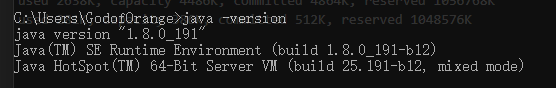
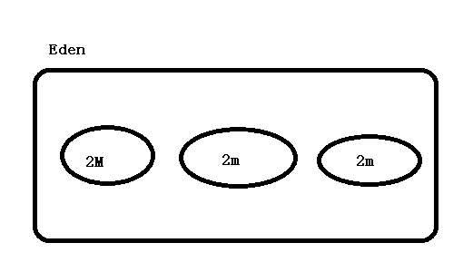
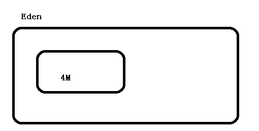
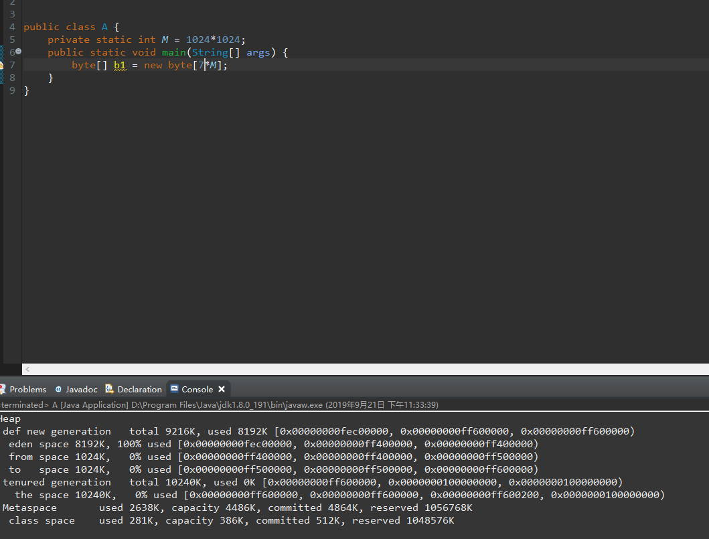
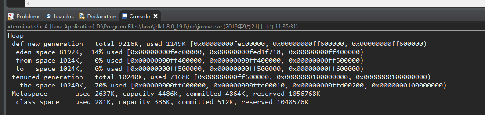

JVM分配内存机制有三大原则和担保机制
具体如下所示：
如何验证对象优先在Eden上分配呢，我们进行如下实验。
首先代码如下所示：
public class A {
public static void main(String[] args) {
byte[] b1 = new byte[4*1024*1024];
}
}
代码很简单，就是创建一个Byte数组，大小为4mb。
然后我们在运行的时候加上虚拟机参数来打印垃圾回收的信息。
-verbose:gc -XX:+PrintGCDetails在我们运行后，结果如下所示。
Heap
PSYoungGen total 37888K, used 6718K [0x00000000d6000000, 0x00000000d8a00000, 0x0000000100000000)
eden space 32768K, 20% used [0x00000000d6000000,0x00000000d668f810,0x00000000d8000000)
from space 5120K, 0% used [0x00000000d8500000,0x00000000d8500000,0x00000000d8a00000)
to space 5120K, 0% used [0x00000000d8000000,0x00000000d8000000,0x00000000d8500000)
ParOldGen total 86016K, used 0K [0x0000000082000000, 0x0000000087400000, 0x00000000d6000000)
object space 86016K, 0% used [0x0000000082000000,0x0000000082000000,0x0000000087400000)
Metaspace used 2638K, capacity 4486K, committed 4864K, reserved 1056768K
class space used 281K, capacity 386K, committed 512K, reserved 1048576K
我们可以看在新生代采用的是Parallel Scavenge收集器
其实我们可以指定虚拟机参数来选择垃圾收集器。
比方说如下参数：
-verbose:gc -XX:+PrintGCDetails -XX:+UseSerialGC
运行结果如下：
Heap
def new generation total 38720K, used 6850K [0x0000000082000000, 0x0000000084a00000, 0x00000000ac000000)
eden space 34432K, 19% used [0x0000000082000000, 0x00000000826b0be8, 0x00000000841a0000)
from space 4288K, 0% used [0x00000000841a0000, 0x00000000841a0000, 0x00000000845d0000)
to space 4288K, 0% used [0x00000000845d0000, 0x00000000845d0000, 0x0000000084a00000)
tenured generation total 86016K, used 0K [0x00000000ac000000, 0x00000000b1400000, 0x0000000100000000)
the space 86016K, 0% used [0x00000000ac000000, 0x00000000ac000000, 0x00000000ac000200, 0x00000000b1400000)
Metaspace used 2637K, capacity 4486K, committed 4864K, reserved 1056768K
class space used 281K, capacity 386K, committed 512K, reserved 1048576K
其实JDK默认的不是Parallel收集器，但是JDK会依照各种环境来调整采用的垃圾收集器。
查看环境的代码如下：
java -version
因此JDK根据server的环境，采用了Paralled收集器。
而Serial收集器主要用在客户端的。
我们看到现在eden区域为34432K，使用了19%，那我们来扩大10倍是否eden就放不下了呢？
我们来验证一下。
public class A {
public static void main(String[] args) {
byte[] b1 = new byte[40*1024*1024];
}
}运行结果如下：
Heap
def new generation total 38720K, used 2754K [0x0000000082000000, 0x0000000084a00000, 0x00000000ac000000)
eden space 34432K, 8% used [0x0000000082000000, 0x00000000822b0bd8, 0x00000000841a0000)
from space 4288K, 0% used [0x00000000841a0000, 0x00000000841a0000, 0x00000000845d0000)
to space 4288K, 0% used [0x00000000845d0000, 0x00000000845d0000, 0x0000000084a00000)
tenured generation total 86016K, used 40960K [0x00000000ac000000, 0x00000000b1400000, 0x0000000100000000)
the space 86016K, 47% used [0x00000000ac000000, 0x00000000ae800010, 0x00000000ae800200, 0x00000000b1400000)
Metaspace used 2637K, capacity 4486K, committed 4864K, reserved 1056768K
class space used 281K, capacity 386K, committed 512K, reserved 1048576K显然，我们还是正常运行了，但是eden区域没有增加，老年代区域却增加了，符合大对象直接分配到老年代的特征。。
所以我们适当的缩小每次分配的大小。
我们在此限制下eden区域的大小
参数如下：
-verbose:gc -XX:+PrintGCDetails -XX:+UseSerialGC -Xms20M -Xmx20M -Xmn10M -XX:SurvivorRatio=8这里我们限制内存大小为20M
Eden大小为8M
然后我们运行我们的代码：
代码如下所示：
public class A {
public static void main(String[] args) {
byte[] b1 = new byte[2*1024*1024];
byte[] b2 = new byte[2*1024*1024];
byte[] b3 = new byte[2*1024*1024];
byte[] b4 = new byte[4*1024*1024];
System.gc();
}
}运行结果如下：
[GC (Allocation Failure) [DefNew: 7129K->520K(9216K), 0.0053010 secs] 7129K->6664K(19456K), 0.0053739 secs] [Times: user=0.00 sys=0.00, real=0.01 secs]
[Full GC (System.gc()) [Tenured: 6144K->6144K(10240K), 0.0459449 secs] 10920K->10759K(19456K), [Metaspace: 2632K->2632K(1056768K)], 0.0496885 secs] [Times: user=0.00 sys=0.00, real=0.04 secs]
Heap
def new generation total 9216K, used 4779K [0x00000000fec00000, 0x00000000ff600000, 0x00000000ff600000)
eden space 8192K, 58% used [0x00000000fec00000, 0x00000000ff0aad38, 0x00000000ff400000)
from space 1024K, 0% used [0x00000000ff500000, 0x00000000ff500000, 0x00000000ff600000)
to space 1024K, 0% used [0x00000000ff400000, 0x00000000ff400000, 0x00000000ff500000)
tenured generation total 10240K, used 6144K [0x00000000ff600000, 0x0000000100000000, 0x0000000100000000)
the space 10240K, 60% used [0x00000000ff600000, 0x00000000ffc00030, 0x00000000ffc00200, 0x0000000100000000)
Metaspace used 2638K, capacity 4486K, committed 4864K, reserved 1056768K
class space used 281K, capacity 386K, committed 512K, reserved 1048576K我们可以发现在eden区域为8192K 约为8M
也就是我们的b4的大小
而原先的b1,b2,b3为6M,被分配到了tenured generation。
原先的Eden区域如下所示，在分配完,b1,b2,b3后如下所示。

这时候我们发现已经无法继续分了。
而查看日志的时候，我们发生了俩次GC。
[GC (Allocation Failure) [DefNew: 7129K->520K(9216K), 0.0053010 secs] 7129K->6664K(19456K), 0.0053739 secs] [Times: user=0.00 sys=0.00, real=0.01 secs]
[Full GC (System.gc()) [Tenured: 6144K->6144K(10240K), 0.0459449 secs] 10920K->10759K(19456K), [Metaspace: 2632K->2632K(1056768K)], 0.0496885 secs] [Times: user=0.00 sys=0.00, real=0.04 secs]
而在
[DefNew: 7129K->520K(9216K), 0.0053010 secs] 7129K->6664K(19456K), 0.0053739 secs] [Times: user=0.00 sys=0.00, real=0.01 secs] 中我们会看到，刚分配的对象并没有被回收。
上面的GC是针对新生代的。
而下面的FullGC是针对老年代的。
如果我们这时候要再分配4m的内存，虚拟机默认将原先的eden区域放到可放的地方，也就是在老年代这里
因此会发生我们这种情况。

这就是整个过程。验证了对象有现在Eden区域回收
指定大对象的参数。
-XX:PretenureSizeThreshold测试代码：如下
-verbose:gc -XX:+PrintGCDetails -XX:+UseSerialGC -Xms20M -Xmx20M -Xmn10M -XX:SurvivorRatio=8public class A {
private static int M = 1024*1024;
public static void main(String[] args) {
byte[] b1 = new byte[8*M];
}
}运行结果如下：
Heap
def new generation total 9216K, used 1149K [0x00000000fec00000, 0x00000000ff600000, 0x00000000ff600000)
eden space 8192K, 14% used [0x00000000fec00000, 0x00000000fed1f718, 0x00000000ff400000)
from space 1024K, 0% used [0x00000000ff400000, 0x00000000ff400000, 0x00000000ff500000)
to space 1024K, 0% used [0x00000000ff500000, 0x00000000ff500000, 0x00000000ff600000)
tenured generation total 10240K, used 8192K [0x00000000ff600000, 0x0000000100000000, 0x0000000100000000)
the space 10240K, 80% used [0x00000000ff600000, 0x00000000ffe00010, 0x00000000ffe00200, 0x0000000100000000)
Metaspace used 2637K, capacity 4486K, committed 4864K, reserved 1056768K
class space used 281K, capacity 386K, committed 512K, reserved 1048576K
我们可以看到，结果数直接把8M扔到了老年代里面了。
而我们修改成7M的时候

被发现7M全部扔到了eden里面。
如果我们制定了参数后，会发现结果变了。
参数如下所示：
-verbose:gc -XX:+PrintGCDetails -XX:+UseSerialGC -Xms20M -Xmx20M -Xmn10M -XX:SurvivorRatio=8 -XX:PretenureSizeThreshold=6M运行结果如下：

我们会发现7M进到了老年代。
参数如下：
-XX:MaxTenuringThreshold每次进行回收的时候，如果没被回收，那对象的年龄+1
如果对象年龄到达阈值，就会进入老年代。
具体测试和上面的Max一样。就不占篇幅了。
参数如下：
-XX:+HandlePromotionFailure步骤如下：
如何将内存分配到栈上呢？
这时就需要我们使用逃逸分析，筛选出未发生逃逸对象。
逃逸分析的主要目标就是分析出对象的作用域。
public class A {
A obj;
//方法返回A对象,发生逃逸。
public A getInstance() {
return this.obj ==null?new A():obj;
}
//为成员属性赋值,发生逃逸
public void setObj() {
this.obj = new A();
}
//没有发生逃逸。对象的作用域尽在当前方法中有效，没有发生逃逸。
public void useA() {
A s = new A();
}
//
public void useA2() {
A s = getInstance();
}
}总结，只要定义在方体中，对象的作用域不发生逃逸，否则发生逃逸。
所以尽量把变量放在方法体内，这样会提高效率。
JVM内存分配策略不是特别复杂，只要一步一步跟着虚拟机走，那么就可以去理解JVM内存分配的机制。